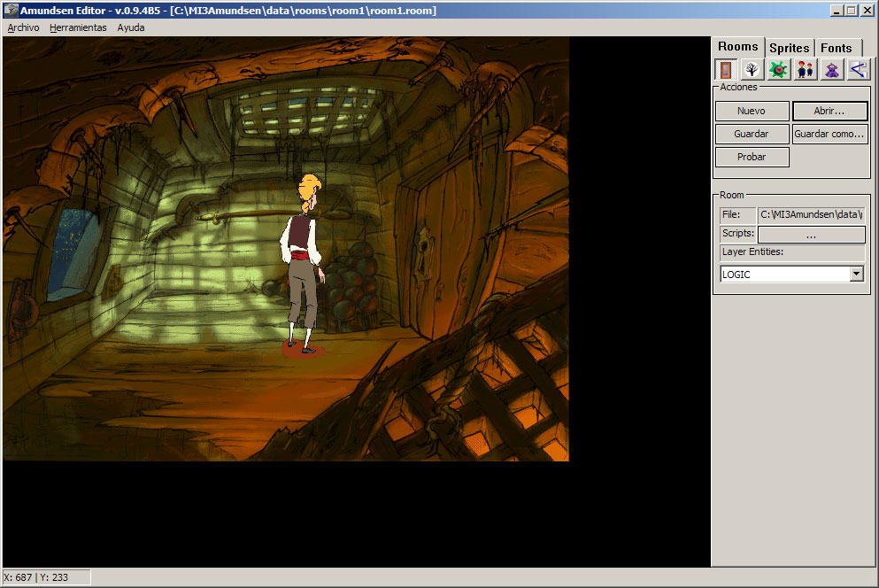

OVERVIEW
Sometime after I left Pyro Studios, I was asked to program a game engine to create graphic adventures for children. The name comes from Roald Amundsen, one of the biggest adventurers of history. The idea behind the engine was to create a game editor for the users to be able to make all tasks and not need codes anything in C++.
THE ENGINE
Some engine features:
// ---
void OnEnterRoom( Room@ pPreviousRoom )
{
// get pointer to application interface
App@ pApp = GetApp();
Entity@ pPlayer = pApp.GetEntityByName( "player_name" );
// hide and disable interface and show the clock cursor
HideInterface( 0, false );
DisableInterface();
SetCursor( "clock" );
// we move the player. Last param is to pause or not
// the script until the player arrived his position
pPlayer.Goto( Vector2f( x, y ), true );
// ... Show and enable the interface ...
ShowInterface( 0, false );
EnableInterface();
SetCursor( "hand" );
}
/*
[
.NAME "Script name"
.DESC "Script description"
.VARS
(
[
.TYPE STRING
.NAME "Variable name"
.DESC "Variable description"
.INIT_FROM "LAYERS" // The value is selected from a combo box with the layers in the room
]
[
.TYPE BOOL
.NAME "Variable name"
.DESC "Variable description"
]
// ... etc ...
]
*/
THE EDITOR
The editor only runs in Windows because it was created using Win32 API. In the editor, you create the game and the output is a package file that contains all information required by the game and is interpreted by the engine. In the image below we can see the editor running with a sample room loaded:
Some editor features:
Warning: Graphics used in samples are extracted from The Curse of Monkey Island game and has copyright from Lucas Arts.